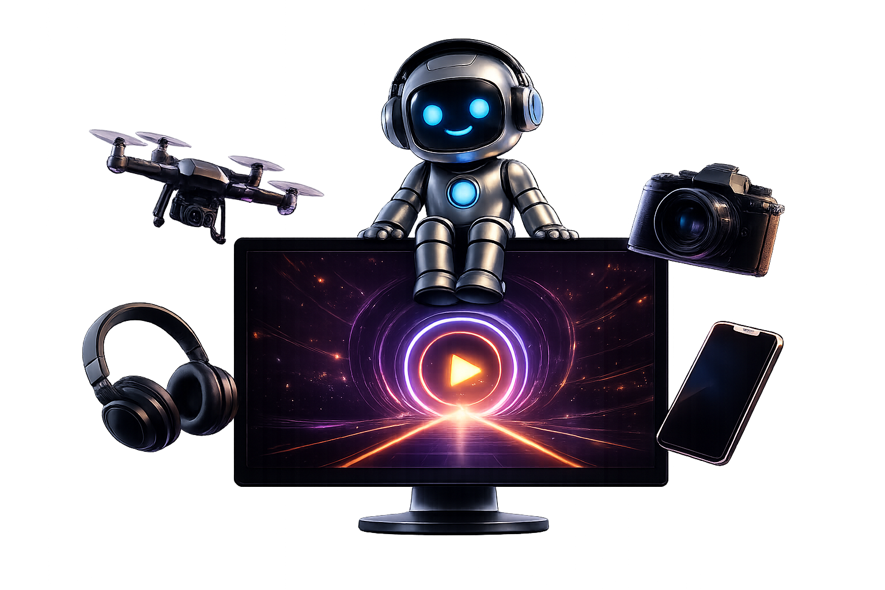

TECH CREATOR + AI DEVELOPER + VIDEO PRODUCER
Technologia, AI
i produkcja wideo.
Łączę technologię, AI i produkcję wideo, tworząc treści oraz rozwiązania dla nowoczesnych marek.
TECH / VIDEO / AI TOOLSTECH2U / 2026
00 TECH2U W 60 SEKUND
Najpierw zobacz
efekt.
Krótki format, który może pokazać Ciebie, kulisy pracy, recenzje, aplikacje AI i projekty webowe w jednym mocnym materiale.
01 O MNIE
KIM JESTEM
Twórca, który
rozumie produkt.
Od kilku lat łączę technologię, tworzenie filmów i projektowanie aplikacji webowych. Dzięki temu pomagam markom pokazać produkt tak, żeby był zrozumiały, wiarygodny i atrakcyjny dla odbiorcy.
AIWeb DevelopmentProdukcja VideoRecenzjeSocial Media
VIDEO PRODUCER
AI DEVELOPER
TECH CREATOR
02 CZYM SIĘ ZAJMUJĘ
Treści, narzędzia
i technologia.
Recenzje, reklamy, materiały promocyjne i filmy produktowe.
Automatyzacja pracy, chatboty, workflow AI i integracje.
Nowoczesne strony internetowe oraz aplikacje dla marek i twórców.
YouTube, TikTok, Instagram, Shorts i formaty pod konkretną platformę.
03 WYBRANE PROJEKTY
Efekt, który da się
pokazać.
Next.js / UI / BrandTech2u Website
Nowoczesna wizytówka twórcy technologicznego z animacjami i sekcjami sprzedażowymi.
Final Cut Pro / AIBassMarker Pro
Aplikacja, która analizuje rytm audio i automatycznie ustawia markery do montażu.
OpenAI / WorkflowAI Video Workflow
Automatyzacje researchu, opisów, struktury materiału i publikacji treści.
04 / BASSMARKER PRO / FINAL CUT PRO
AI DLA MONTAŻYSTÓW
BassMarker
Pro.
Wykrywa beaty i automatycznie stawia markery w Final Cut Pro. Ty budujesz historię, program pilnuje rytmu.
Chcę BassMarker Pro ↗07 WSPÓŁPRACA
Jak możemy
współpracować?
Profesjonalne testy sprzętu, ujęcia produktowe i jasne wnioski dla odbiorcy.
Video sponsorowane, materiały social i formaty pod launch produktu.
Chatboty, automatyzacje, analiza treści i procesy, które oszczędzają czas.
Projektowanie, wdrożenie i dopracowanie strony albo narzędzia webowego.
08 OPINIE
Konkretnie,
bez szumu.
Materiał był konkretny, estetyczny i gotowy do publikacji bez dodatkowych poprawek.
Tech2u bardzo dobrze tłumaczy technologię językiem odbiorcy.
Największa wartość to połączenie strategii, produkcji i technicznego wykonania.
09 FAQ
Najczęstsze
pytania.
Czy realizujesz projekty zdalnie?
Tak. Mogę poprowadzić współpracę zdalnie, od briefu po finalne materiały.
Ile trwa stworzenie strony?
Zależy od zakresu. Prosta wizytówka to zwykle kilka dni, większy projekt wymaga indywidualnej wyceny.
Czy tworzysz aplikacje AI?
Tak. Projektuję automatyzacje, chatboty i narzędzia dopasowane do konkretnego procesu.
Czy można zamówić film sponsorowany?
Tak, jeśli produkt pasuje do tematyki Tech2u i da się go pokazać uczciwie.
Czy wystawiasz fakturę?
Tak, szczegóły ustalamy przy konkretnej współpracy.
11 KONTAKT
WSPÓŁPRACA / PARTNERSTWA
Masz produkt, projekt albo kampanię? Napisz do mnie.
Opowiedz, co chcesz pokazać lub zautomatyzować. Odpowiem z konkretną propozycją.
kontakt.tech2u@gmail.com ↗
10 SOCIAL MEDIA
KANAŁY TECH2U
Jedna pasja.
Cztery formaty.
Tworzę treści tam, gdzie mają największy sens. Każda platforma ma swój charakter, a ja wykorzystuję to w 100%.
